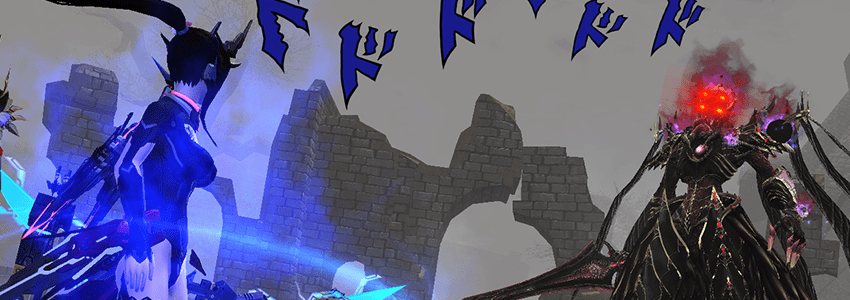

Archery
Archery
Cranked to Eleven

Bullshit
Bullshit
To Its Core

Gotta get something to use somehow.
Similar to the weapon section, PSO2 also offers overabundant choices of the units that you can use. The server you are playing, the time you join or return to the game, your luck, and your budget will dictate your options. Again, you can aim for the best, but you would need something to use before that. Your best units at that moment follow these rules:
I recommend you to check this link for JP and this link for EN to see the information about (almost) every unit and the set bonus that PSO2 has in each server. Otherwise, check the tabs below and see them all.
EP6 gives you... quite a lot of options.
13* Units offer the highest amount of innate stats in PSO2, support S-class Special Abilities that further enhance your character, and you can mix & match however you want. Several units in this tier also have significant stat differences, and most are often drop-only. Check the wiki for more info.
In my honest opinion,
there are TWO units series that you should be able to grab with ease: Liberate series and 13* Lightstream series,
judging from the campaign events in EP6. The first is more offensive with higher attack stats, while the second
gives you more HP for extra safety. You can work on the better ones with either, combined or not.
What about the Rehased XQ set? They are bound by the set bonus, luck-reliant to get, and work as
fodders for the affixing process. Leave them be.
Late EP3 to Early EP6 was quite a ride.
12* units are the straight upgrade from the 11* units, where most are freed from the curse of set bonus,
and you can start socketing your skill rings for even more perks. During EP4, you will be pursuing the Qliphard
[Clifard] series for extra PP, and having Ray/Union units if you are unlucky. Those that use Invade can hope for 12* Austere
[Ofze-] upgrade
Your unit sets should persist into the EP5 era. By then, you will see Evleda series as Ray/Union replacement, Lightstream and Mask of Vain as your goal for end-game, and Phobos as Story Quest rewards.
Besides, a level 75 title reward should also give you a Sub/Stellar Wall set as a catch-up units set. It is still worse than getting 12* units along with cheap affixes.
By the time we arrive at the near-end of EP6, most of them become obsolete, or exist as a carrier for various affixes that dropped from enemies.
Just ignore this tier. DO IT.
Why? These are the units that helped you progress through the days of EP1 to EP3, especially the EN players a long time ago. Regardless of servers, they still serve you well as an extremely cheap option to get you through low level contents. In EP6, however, everything progresses so fast that you probably don’t even know they exist. 12* units are more common, and some major campaigns often throw 12* or even 13* units right at your face.
It’s nostalgic, trust me. Bow Braver really needed PP to function properly back then, to the point that many have asked for the best combination and literally caused me some headache modifying this section. The PP issue becomes less problematic today, so kiss them goodbye.
| Both Servers and the end-game of EP6 |
|---|
|
Cras [Klauz] Units; ALL OF THEM |
Other possible alternatives include Liberate units and the upgraded 13* Lightstream [Trailblaze] units. Otherwise, any 13* units you can get from exchange shop, titles, or even quest drop will work as your placeholder.
Looking back at the tabs, the stats of the unit sets in each tier vary and sometimes barely noticeable between some. You never know when you would obtain it, so alternatives exist which you can find as drops or get from shops. No matter how much you want to ignore this part, you have to learn to assemble your unit set - whatever it is - that helps you get closer to 200 PP or more so that you can play the class comfortably.
A well-created unit set will stay with you for a long time until a massive gear update, so take your time finding the better and persevere. Smartass players, whether they have played JP or not, will cause a massive disturbance to the market price for units and your affixes, which means you should plan accordingly. If it’s your doing, thanks for making my life harder.
Make sure to grind your units up to +10 for more DEF stats. Don’t think too much about elemental damage and attack damage resistance you get from your units. Avoiding hits are the best form of defense in PSO2, but having some damage mitigation will save you from an untimely demise.
It is exclusive for 13* units, and it’s a wise decision to include it. You can always check the full
list here for JP
and
here for EN.
After another review, these are the ones I believe work quite well for us. The potent ones always have an abysmal drop rate, so pray for RNG to grace you with them.
Unlike the Weapon SSA, you have a lot more freedom to choose whatever Unit SSA you want use. It's definitely fine to go full damage setup, but for the others, here are my suggestions.
The recovery range is around 5.5 Steps Distance or around 19 in-game meters.
It is a toned down version of Phantom’s Gespenst, having reduced damage mitigation value but the same cooldown of 30 seconds. If you get one-shotted, the SSA can’t save you. Note that the incoming attack must reduce your HP below 50% for it to be active.
Number wise, it seems to increase your jump height by 20%. For better explanation, the SSA makes the height of your double jump equals to using Jumping Dodge, excluding the invincibility frames during the initial jump.
The SSA can now blast a group of enemy within 15 meters of the impact.
The attack won’t disappear if the enemy part breaks from it, while not being counted as “attack from behind”.
The game also treats it as a different attack from S4:Raising Pursuit, while having around twice the area of Torrential Arrow or Sharp Bomb T0.
Your choice for S6 depends on your playstyle and what you matter more. Feel free to do some experiments as long as you can afford it,
because different people value different things.
However, if you are using S4:Raising Pursuit, I recommend grabbing S6:Raising Expanse for better performance.
Speaking of aura/gleam users, S6:Rainbow’s Shield is also a viable choice to improve your durability in some dangerous situations.
It works the same as Ranger’s Standing Snipe, activating when your character’s coordinate doesn’t change (standing very still) for at least one second. PP recovered from Glowing Grace (and any SSA alike) is unaffected by Natural PP Recovery!
People would recommend using it strictly for those that do quests solo, whether it will be endless quests, triggers, or even 12-man raids. In good hands and gears, Bow Braver can out damage almost every class/weapon in the game, making it a solid choice until a good Hunter, Gunner, and Hero steal your aggro with their class skills, or you use Stealth Attack.
Most of the time, you have two options for S7, which are Glowing Grace for extra PP recovery, or Descried Warrior for more damage and defense in general solo quests. The first will force you to be considerate with your movement, while the second can underperform in group content.
If you are still using aura/gleam and have problems in filling your Critical Strike Chance, grabbing S7:Rainbow’s Skill for another consistent +30% value can help. It doesn’t take a slot from your weapon, so it works.
The tick is 15 seconds similar to the regular Shifta and Deband cast. You can constantly refresh and extend the buff duration by being in air for 2 seconds, drop down, and get in the air again! Note that it doesn’t count “floating animation” such as Jet Boots idle pose.
While the chance of infliction is unknown at the moment, certain sources claim that the rate is pretty high and can synergize extremely well with Luster’s Deband Disorder. All status effects applied are at tier V, the highest of all. However, you never know which one will come out. Those rapid-hit attacks can lead to a weird situation of enemy having existential crisis, or the status effect can occur at the wrong moment.
For S8, get Sky Dance’s Boon. Think of it as your “chase item”, usable regardless of your subclass choice. The ability is so damn powerful that it stops you from tapping Shifta or buffer weapons to save a subpalette slot, allowing you to maintain the buff almost indefinitely. Otherwise, taking PP UP (2) or R-ATK UP is always viable.
I might be repeating this, but you will need to learn Shifta and Deband first, preferably the level 17, so that Sky Dance’s Boon can function. The SSA doesn’t give you a free buff though, but rather automating it with conditions.
If, again, you are an aura/gleam user, or a BrLu player that finds the SSA somehwat redudant,
S8: Rainbow's Decay can be a powerful choice. Instead of using weapons with special affixes to inflict Status Effect, you can do it deliberately now. Still, it ends up being about your preference versus trade-off for setup.
It’s convoluted. It’s the thing people try to explain. It’s the only way for you to achieve more power. I tried to reorganize the section, so please spend some time learning about the Affixing System of PSO2. You won’t regret it.
| Selena's Affix Guide | AIDA's Docs on Affixing | The Affix Simulator | JP and EN Visiphone Pages |
|---|
Abilities/Augments Categories 101. Observe at your discretion.
Affixing means putting “extra stats” onto your weapons and units through a series of planning, material procurement, and executing. It is important because you can replicate the same affix pattern on three of your units for triple the values. Combine that with the ones on your weapon, and your damage should increase significantly.
PSO2 has a tremendous amount of abilities/augments, and it can be overwhelming for the newer players.
The image above should give you a rough idea on what you should find in your equipment.
The more abilities/augments and the higher difficulty you take, the more money and items you would need to assemble your desired pattern.
Using previous images of weapons and units as references, here is my suggestion.
| 14-15* Bullet Bow; Episode 5 and beyond | 6-8 affixes (Prefer to be 8) |
| Anything else that has lower rarity than 14* | ANY number of affixes is fine. |
| High-end units (The
|
7-8 affixes (Preferred 8 especially with Cras [Klauz] |
| Mid-end units (Most
|
5-6 affixes. |
| Low-end units (
|
Ignore affixing on them. |
Use the affix simulator to plan out what affixes you can, optimize the plan so it doesn’t use many fodders,
and minimize the risk of failure as much as possible. The image below should show the process and examples.
PSO2 does respect your time and resources you have invested. Many, many videos on
Youtube (such as one by your Partizan God Raven/White Glint)
also show you how to make a bonker affixes combination, so try to spend some time going through the explanations, AND start farming!
When you’ve got those best-in-slot units and weapons, along with good affixes, you don’t have to change anything for a while. Otherwise, you just want to fuel your fashion or save up for future items by selling them.
Examples and Endless Cycle of Affixing
Powered by w3.css and the cursed soul of the guide writer UwU.